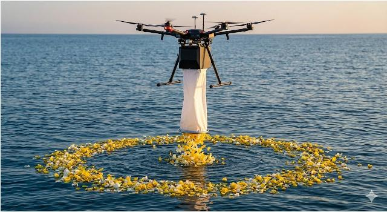
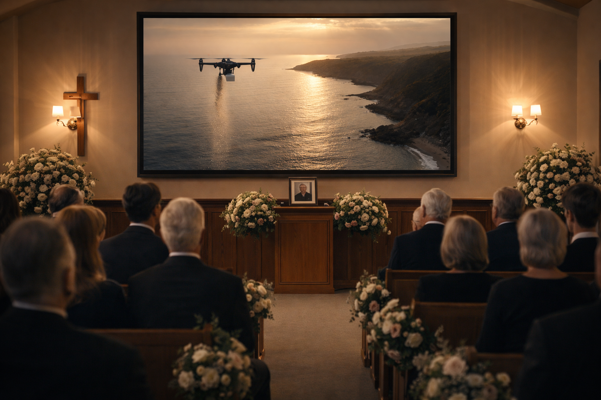

Memorial Flight Co
A peaceful aerial tribute for families in Melbourne, designed with care, respect, and simplicity.
Now accepting enquiries for Mornington Peninsula and surrounding coastal areas.
Aerial memorial service
Memorial Flight Co offers a carefully managed aerial ash scattering service, designed to give families a meaningful final tribute in a setting that feels open, calm, and deeply personal.
From the first conversation through to the final recording, every step is handled with quiet professionalism, clear communication, and respect for the person being remembered.



How it works
Share a few details and we'll confirm availability, timing, and suitability.
We guide you through location, logistics, approvals, and the tone of the tribute.
The scattering is carried out respectfully over a carefully selected coastal setting.
You receive a beautifully captured visual record to hold onto and share with family.
What families receive
This experience is designed for families who want something more natural than a traditional service format, and more visually meaningful than a simple administrative process.
Coastal settings, careful timing, and considered documentation all work together to create a farewell that feels serene, memorable, and genuinely reflective of a life lived.
Launching in Melbourne
We are currently operating in a limited capacity as we refine the service and ensure every tribute is delivered to the highest standard.
Early enquiries help us understand demand, confirm suitability, and keep you informed as availability opens.
Limited launch availability
Handled with care

Visual atmosphere

For families seeking something meaningful
This service is suited to families who want a farewell that feels spacious, personal, and visually beautiful.
Whether you are planning ahead or exploring options after a recent loss, we are here to guide you with clarity, warmth, and care.
Begin with a private enquiry
Join the waiting list or request a private call and we’ll help you understand the options, timing, and next steps.